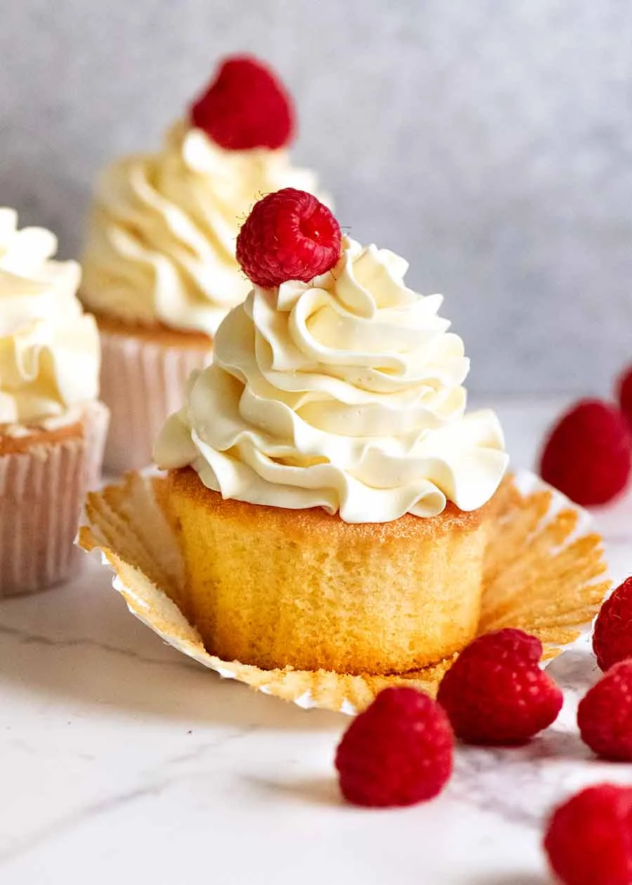

VANILLA CUPCAKES
A simple vanilla cupcake for any occasion. It's moist, fluffy and delicious, you'll make them every week!
| Prep. time: 15mins | Cook time: 20mins | Servings: 16 cupcakes | Difficulty: Easy |

INGREDIENTS LIST
For the Cupcakes:
- 1⅔ cup all-purpose flour 213g
- 1 cup granulated sugar 200g
- ¼ teaspoon baking soda
- 1½ teaspoon baking powder
- ¼ teaspoon kosher salt
- ¾ cup unsalted butter 170g, melted
- 3 egg whites room temperature
- 1 tablespoon vanilla extract 15mL
- ½ cup sour cream 120mL, room temperature
- ½ cup whole milk 120mL, warm
For the Vanilla Buttercream:
- 2 pound confectioners sugar 900g, sifted
- 1 pound unsalted butter 450g, room temperature
- 1 teaspoon vanilla extract
- 1 tablespoon heavy cream
- 1 pinch kosher salt
- 1 tsp whole milk
INSTRUCTIONS
For the Cupcakes:
- Preheat oven to 350 degrees Fahrenhiet. Place cupcake papers in a cupcake pan.
- Sift the flour, sugar salt, baking soda and powder into a large bowl, and whisk together.
- Separate the eggs. You can use the yolks for a custard or a batch French buttercream.
- In another bowl, whisk together the wet ingredients until combined. (The batter may be clumpy, do not worry!)
- Add the wet ingredients to the dry ingredients. Mix until combined.
- Distribute the batter evenly into cupcake papers, filling each paper with about 2/3 the way up.
- Bake for about 18 minutes or until centers are springy to the touch.
For the Buttercream:
- In a stand mixer fitted with a paddle attachment, cream the room temperature butter. Add in the confectioners sugar in two batches. Add salt, milk, cream and vanilla. Mix until fluffy.
- Transfer to a piping bag.
- Pipe a large dollop of buttercream on each cupcake.
NUTRITION FACTS
| Nutrient | Amount per Serving |
|---|---|
| Calories | 624kcal |
| Carbohydrates | 80g |
| Protein | 3g |
| Saturated Fat | 21g |
| Monounsaturated Fat | 9g |
| Cholestorol | 90mg |
| Sodium | 116mg |
| Fiber | 0.4g |
| Sugar | 69g |
| Vitamin A | 1046IU |
Adapted from Preppy Kitchen